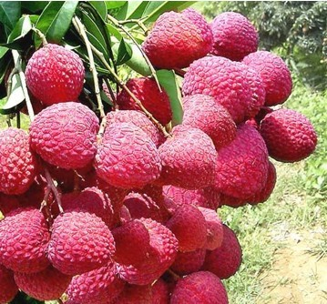
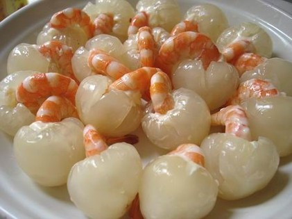

开花特征
- 荔枝花穗抽出至开花前的孕蕾期长短与多种
- 以冬春（1～3月）的气温影响最大一般为30～40天
- 开花期的长短则与品种、气候、花穗抽生早迟等有关
- 短的仅15天，长的可达86天，荔枝树的开花有如下特性
植物属性

- 常绿乔木，树冠广阔，枝多拗曲。
- 高通常不超过10米，有时可达15米或更高，树皮灰黑色
- 小枝圆柱状褐红色，密生白色皮孔。叶连柄长10～25厘米或过之
- 小叶2或3对，较少4对，薄革质或革质，披针形或卵状披针形，有时长椭圆状披针形，长6～15厘米，宽2～4厘米，顶端骤尖或尾状短渐尖，全缘，腹面深绿色，有光泽，背面粉绿色，两面无毛
- 侧脉常纤细，在腹面不很明显，在背面明显或稍凸起
膳食营养

- 荔枝所含丰富的糖份具有补充能量，神疲等症状
- 荔枝肉含丰富的维生素C和蛋白质
- 荔枝有消肿解毒、止血止痛的作用
- 荔枝拥有丰富的维生素，可促进微细血管的血液循环，防止雀斑的发生，令皮肤更加光滑